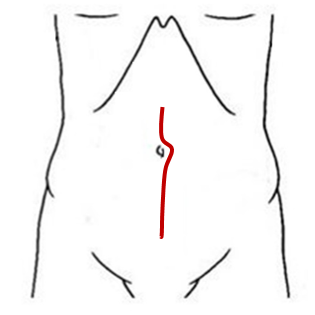
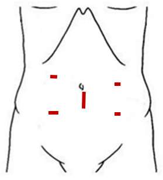

| 選項考量 | 傳統開腹手術 | 微創內視鏡手術 約5-10%轉換至傳統手術 |
|---|---|---|
| 適應症 (適合開刀的情況) |
|
|
| 手術傷口示意圖 |  |  |
| 手術時間(小時) | 3小時 | 4小時 |
| 手術中失血量(cc) | 100cc 約一瓶養樂多 |
130cc 約一個小藥杯 |
| 傷口感染率 | 10% | 5% | 腸道吻合滲漏率 | 4% | 3% | 術後死亡率 | 1% | 1% | 術後排氣天數 | 3天 | 2天 | 手術後平均住院天數 | 6天 | 5天 | 手術自費耗材 | 約1-3萬元 | 約5-15萬元 |
| 想選擇傳統開腹手術的理由 | 哪邊的狀況對您比較重要 | 想選擇微創內視鏡手術的理由 |
|---|---|---|
| 除了目視檢查，能夠以手觸摸做更進一步的檢查 |
|
僅以腹腔鏡做目視檢查 |
| 不在意傷口大小、疼痛與美觀 |
|
非常在意傷口大小、疼痛與美觀 |
| 能接受較長時間的恢復 |
|
自費藥品、耗材的使用 |
| 我不希望有額外的支出 |
|
醫師認為有幫助的，我希望盡量使用 |
不管什麼樣的狀況下都能夠執行內視鏡手術？
在能夠執行內視鏡手術的狀況下，效果與傳統手術相似？
在執行內視鏡手術有困難或是手術中大出血時，必要時會捨棄微創傷口，使用傳統開腹傷口完成手術，已使用的自費器械品項無法退費或減免。
我已經確認好想要的治療方式，我決定選擇：（下列擇一）